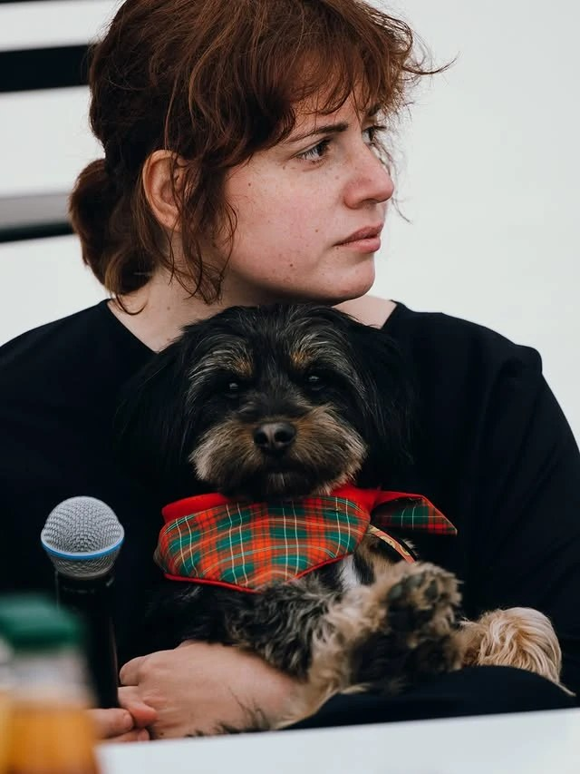

O klubie
Kino Charlie · Łódź

Prowadząca
Diana Dąbrowska
Filmoznawczyni, krytyczka filmowa, animatorka kultury i edukatorka filmowa. Opiekunka wspaniałego pieska Kędziorka.
Od 2023 roku prowadzi w Kinie Charlie w Łodzi cykl Kino z Dianą Dąbrowską: spotkania, na których oglądamy filmy na dużym ekranie i rozmawiamy o nich razem. W programie jest klasyka, kino współczesne i przedpremiery.
Klub w liczbach
Gdzie
Kino Charlie w Łodzi. Adres i dojazd znajdziesz na stronie kina.
Bilety
Bilety kupisz online przez stronę kina. Przycisk „Kup bilet” jest przy każdym nadchodzącym spotkaniu.
Kontakt
Najszybciej napiszesz do Diany przez jej profile: